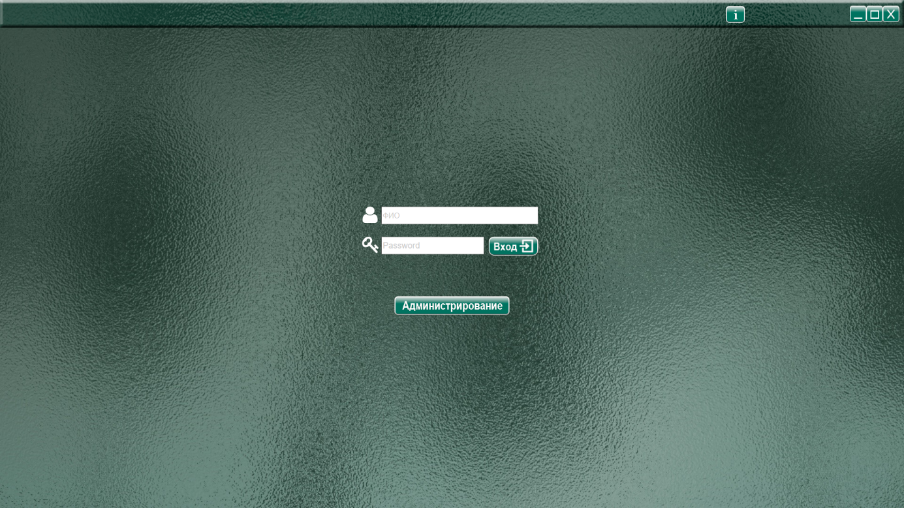
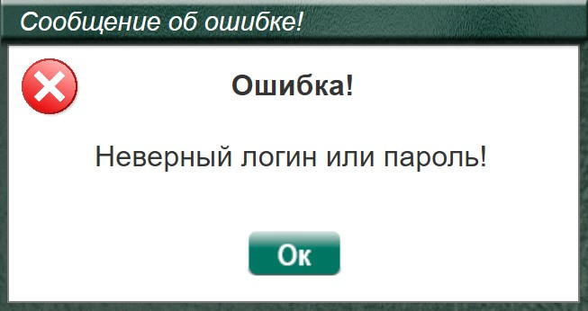
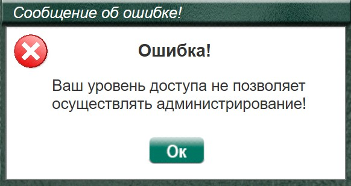

Окно входа в программу.

Описание элементов управления
Поле ввода «логин»
Ввод логина авторизованного пользователя В невыбранном состоянии отображает подсказывающую надпись: «ФИО», которая пропадает при постановке курсора в данное поле.
Поле ввода «пароль»
Ввод пароля авторизованного пользователя. В невыбранном состоянии отображает подсказывающую надпись: «Введите пароль», которая пропадает при постановке курсора в данное поле.
Функционал «показать пароль» - символы читаемы.
Функционал «скрыть пароль» - символы закрыты «звездочками»
Кнопка «Вход»
После заполнения полей логин и пароль, при на нажатии (левой кнопкой мыши) на кнопку «Вход» – если логин и пароль верны, то пользователь переходит на страницу «Список пациентов». Если логин и/или пароль не верны, то показывается сообщение об ошибке

После закрытия сообщения об ошибке нажатием кнопки «Ок», пользователь остается на странице входа, поля «Логин» и «Пароль» очищаются. Для входа в программу нужно заново и КОРРЕКТНО! ввести логин и пароль.
Кнопка «Администрирование»
Программа имеет два уровня доступа: «Специалист» и «Администратор».
При регистрации (на странице «Администрирование») нового пользователя в программе, ему присваивается уровень доступа с соответствующими полномочиями:
«Специалист» - имеет доступ ко всем частям программы, за исключением страницы «Администрирование», и соответственно не может создавать, добавлять новых пользователей, и/или редактировать данные ранее зарегистрированных. Данной возможностью обладает только пользователь с уровнем доступа «Администратор».
После заполнения полей логин и пароль, при на нажатии левой кнопкой мыши на кнопку «Администрирование» - если логин и пароль соответствуют уровню доступа «Администратор», то осуществляется переход на страницу «Администрирование». Если логин и пароль не соответствуют уровню доступа «Специалист», то показывается сообщение об ошибке

После закрытия окна с сообщением о несоответствии уровня доступа нажатием на кнопку «Ок», пользователь остается на странице входа, поля «Логин» и «Пароль» сохраняют введенные данные, давая возможность либо нажать кнопку «Вход» для входа в программу, либо зайти под логином и паролем с уровнем доступа «Администратор». Более подробно о регистрации и редактировании пользователей, а также о присвоении им уровня доступа в описании страницы «Администрирование».